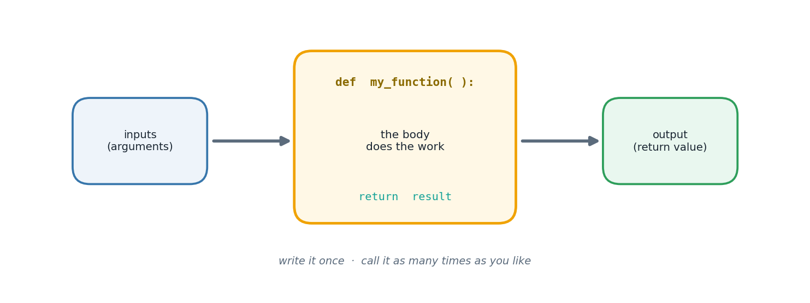

The big idea
Up to this point every program has been a single flat sequence of instructions. That works until it doesn't — until the same logic is needed in three places, or a file grows past what you can hold in your head.
A function solves both problems at once. It gives a chunk of behaviour a name, a set of inputs,
and an output, and from then on the rest of your program can use it without knowing how it works
inside. That boundary is called abstraction, and it is the single most important idea in
programming. You already rely on it constantly: you call len() without any idea how it counts.
Two supporting concepts make functions trustworthy. Scope means variables created inside a function are invisible outside it — so a function cannot accidentally clobber your other variables. And a return value means a function hands a result back to whoever called it, rather than just printing something. A function that prints is a dead end; a function that returns can be reused, combined, tested and chained.
This chapter also introduces recursion: a function that calls itself. It is the natural way to express problems that contain smaller copies of themselves, and every recursive function needs two parts — a base case that stops the descent, and a recursive case that moves toward it.

How it works
Defining and calling
def area_of_circle(radius): # 'radius' is the parameter
return 3.14159 * radius ** 2 # 'return' hands the answer back
a = area_of_circle(5) # '5' is the argument
If a function has no return, it silently returns None.
The four ways to pass arguments
| Style | Example | Why |
|---|---|---|
| Positional | f(3, 5) |
order decides which is which |
| Keyword | f(height=5, width=3) |
order stops mattering; far more readable |
| Default | def f(msg="hi") |
caller may omit it |
| Variable-length | def f(*args) |
accept any number of values |
*args collects extra positional arguments into a tuple — which is how total_of(72, 88, 91) works
without knowing the count in advance. Its partner **kwargs does the same for keyword arguments.
Recursion, concretely
def fib(n):
if n <= 1: # BASE CASE — stops the recursion
return n
return fib(n-1) + fib(n-2) # RECURSIVE CASE — smaller problem
Elegant, and a useful demonstration — but be aware it recomputes the same values enormously often. For
fib(30) that is over a million calls. Recursion buys clarity; it does not always buy speed.
Lambdas
A lambda is a small anonymous function written inline:
cone_volume = lambda r, h: (1/3) * math.pi * r**2 * h
Perfect as a throwaway key= argument to sorted(). If you find yourself naming a lambda and reusing
it, it deserves to be a proper def — with a docstring.
The tasks
Everything above was theory. What follows is the lab work — each task stated, explained, then solved with code that really ran.
Task 1
Task 1 — Max and Min Without Built-ins
A single pass tracks the running maximum and minimum manually.
def extremes(values): top = bottom = values[0] for v in values[1:]: if v > top: top = v if v < bottom: bottom = v return top, bottom sample_values = [34, 8, 121, 56, 3, 77] highest, lowest = extremes(sample_values) print("Maximum:", highest) print("Minimum:", lowest)
Maximum: 121 Minimum: 3
Task 2
Task 2 — Sum of Cubes Below n
def cubes_below(n): return sum(i ** 3 for i in range(1, n)) limit = 7 print(f"Sum of cubes below {limit}:", cubes_below(limit))
Sum of cubes below 7: 441
Task 3
Task 3 — Recursive Count-Up (No Loops)
def count_up_to(n): if n == 0: return count_up_to(n - 1) print(n, end=" ") count_up_to(12) print()
1 2 3 4 5 6 7 8 9 10 11 12
Task 4
Task 4 — Recursive Fibonacci, n Terms
def fib_term(k): if k <= 1: return k return fib_term(k - 1) + fib_term(k - 2) term_count = 9 series = [fib_term(i) for i in range(term_count)] print("Fibonacci series:", *series)
Fibonacci series: 0 1 1 2 3 5 8 13 21
Task 5
Task 5 — Cone Volume as a Lambda
V = (1/3) * pi * r^2 * h
import math cone_volume = lambda radius, height: (1 / 3) * math.pi * radius ** 2 * height print("Volume of cone:", round(cone_volume(4, 9), 3))
Volume of cone: 150.796
Task 6
Task 6 — Max/Min Tuple as a Lambda
spread = [22, 4, 61, 17, 88, 9] bounds = lambda seq: (max(seq), min(seq)) print("(max, min):", bounds(spread))
(max, min): (88, 4)
Task 7
Task 7 — Keyword, Default, and Variable-Length Arguments
# Keyword arguments: order doesn't matter, names do def profile(name, age): print(f"Name: {name}, Age: {age}") profile(age=23, name="Kabir") # Default arguments: a fallback value if the caller omits it def welcome(name, note="Welcome aboard!"): print(f"{name}: {note}") welcome("Sneha") welcome("Sneha", "Great to have you back") # Variable-length arguments: *args collects any number of positionals def total_of(*scores): return sum(scores) print("Total marks:", total_of(72, 88, 91, 67, 84))
Name: Kabir, Age: 23 Sneha: Welcome aboard! Sneha: Great to have you back Total marks: 402
Common pitfalls
RecursionError. Write the base case first.def f(items=[]) reuses the same list across calls. Use None and create inside.list, sum or str breaks the real one for the rest of the scope.